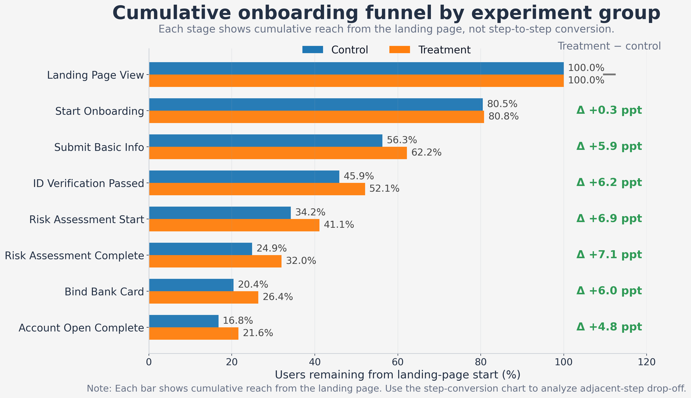
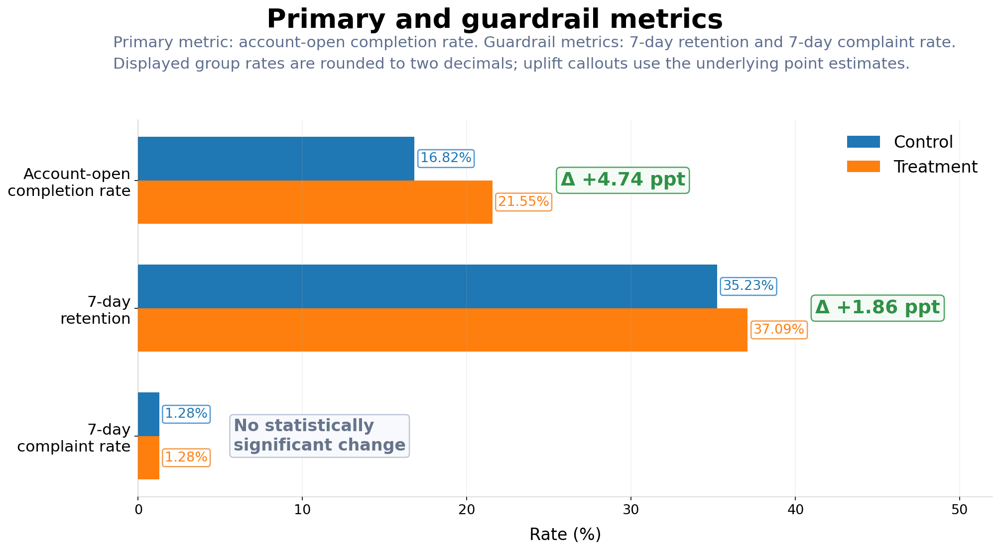
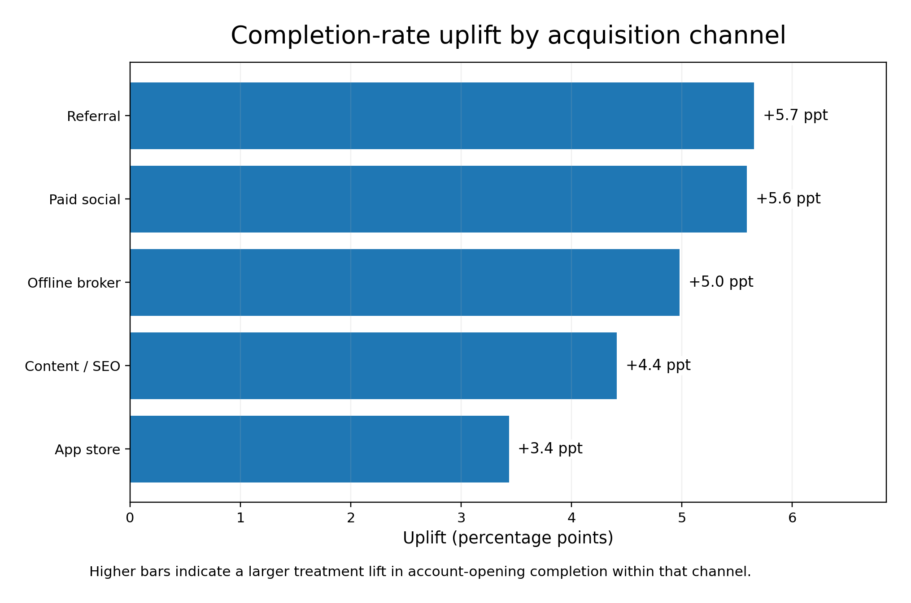
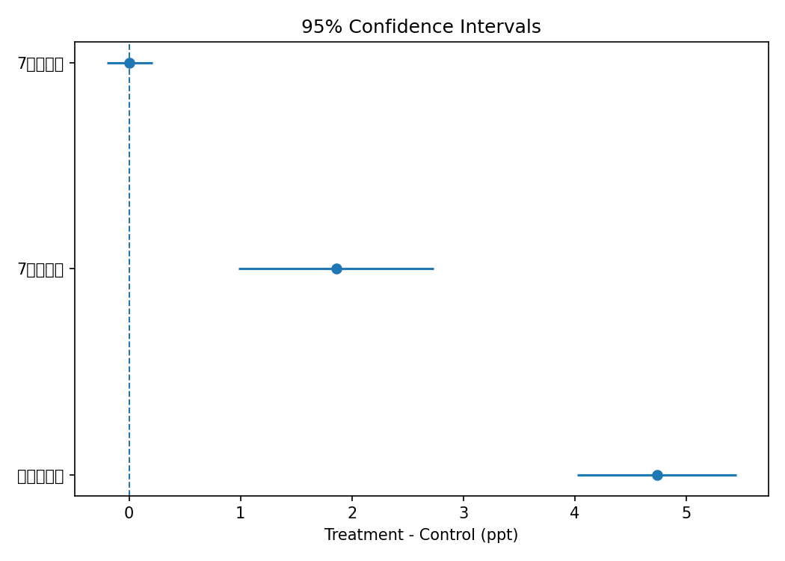

Decision
建议分渠道灰度上线
主指标显著提升，留存同步改善，投诉率未见显著恶化。优先在 Referral 与 Paid social 两个 uplift 更高且样本更稳健的渠道先行灰度。
这个作品集案例用 synthetic data 复现券商开户流程优化实验：从业务问题定义、随机分流检查、漏斗诊断、分层 uplift、置信区间，到灰度上线建议，完整展示增长分析岗位的工作链路。
与只展示“实验显著提升转化”的作品不同，这个版本把重点放在 为什么会提升、提升发生在哪一段、应该先在哪些渠道灰度、上线后继续看什么风险，让项目更接近真实业务评审材料。
用一句话概括：这轮 treatment 值得进入灰度上线，但更重要的价值在于，它清楚地指出了前中段信息填写与风险测评阶段才是真正的流失瓶颈。
主指标显著提升，留存同步改善，投诉率未见显著恶化。优先在 Referral 与 Paid social 两个 uplift 更高且样本更稳健的渠道先行灰度。
相较于“最后一步收口”，treatment 更明显地改善了 基础信息提交、进入风险测评 与 风险测评完成 三个相邻阶段之间的推进效率。
若同等 uplift 可稳定外推，对应约可多带来 4,736 个开户完成、1,858 个 7 日留存 与 1,940 个 7 日首充。
当前 treatment 把 表单精简、进度条提示 与 关键疑问解释 打包上线。下一轮应拆解单因素贡献，避免组合实验难以归因。
券商新客开户链路通常包含基础资料填写、身份校验、风险测评、绑卡与开户注册等多个高摩擦步骤。
这个版本把实验表达从“做了一个 A/B test”升级为“完成了一次可供业务决策的实验评审”。
user-level 50/50 分流
Control = 23,256
Treatment = 22,962
2026-01-01 至 2026-03-16
共 75 天，覆盖完整开户链路与 7 日后验指标。
Primary：开户完成率
Guardrails：7 日留存率、7 日投诉率
Exploratory：7 日首充率
Balance check + 双样本比例检验 + 95% CI；渠道分层结果额外做 Holm 多重比较校正。
渠道、设备、来源意图、年龄段分布均未见显著失衡，说明 treatment 效果更有可能来自流程改动本身，而不是样本结构偏差。
按当前样本规模估算，在 α = .05、80% power 条件下，主指标约可识别 0.99 ppt 的绝对 uplift，而本次实际观察到的 uplift 为 4.74 ppt。
这里不只汇报 uplift，而是同时汇报 effect size、置信区间与业务解释，避免项目看起来只是“跑了个显著性检验”。
| 指标 | Control | Treatment | 绝对变化 | 95% CI | 结论 |
|---|---|---|---|---|---|
| 开户完成率 | 16.82% | 21.55% | +4.74 ppt | [4.02, 5.45] | 主指标显著提升 |
| 7 日留存率 | 35.23% | 37.09% | +1.86 ppt | [0.98, 2.73] | 体验质量同步改善 |
| 7 日投诉率 | 1.277% | 1.280% | +0.00 ppt | [-0.20, 0.21] | 无显著差异 |
| 7 日首充率（探索性） | 34.18% | 36.12% | +1.94 ppt | [1.07, 2.81] | 商业结果方向一致 |
真正能让项目从“会算 uplift”升级到“懂业务”的地方，在于你能否说明 treatment 改善了哪一个环节，以及为什么是那个环节。
| 相邻阶段 | Control | Treatment | 变化 |
|---|---|---|---|
| Landing → Start onboarding | 80.50% | 80.79% | +0.29 ppt |
| Start → Submit basic info | 69.90% | 77.04% | +7.14 ppt |
| Submit basic info → ID pass | 81.60% | 83.73% | +2.13 ppt |
| ID pass → Risk assessment start | 74.41% | 78.81% | +4.40 ppt |
| Risk start → Risk complete | 72.90% | 78.01% | +5.11 ppt |
| Risk complete → Bind bank card | 81.72% | 82.35% | +0.64 ppt |
| Bind bank card → Complete | 82.63% | 81.69% | -0.94 ppt |
bind bank card → account open complete 的 step conversion 略降 0.94 ppt。这意味着整体 uplift 主要来自更早阶段的推进，而不是最后一步的收口优化。不是所有渠道都应该同时全量。更成熟的做法是：先看分层效果，再决定灰度先后顺序与资源投入重点。
| 渠道 | Control | Treatment | Uplift | 建议 |
|---|---|---|---|---|
| Referral | 19.95% | 25.60% | +5.65 ppt | 第一优先级灰度 |
| Paid social | 12.05% | 17.64% | +5.59 ppt | 第一优先级灰度 |
| Offline broker | 21.79% | 26.77% | +4.98 ppt | 第二优先级 |
| Content / SEO | 17.48% | 21.90% | +4.41 ppt | 第二优先级 |
| App store | 15.73% | 19.16% | +3.43 ppt | 保守推进 |
如果没有真实 ARPU / LTV 数据，不要硬编收入金额。更稳健的写法是用“每 10 万 landing 用户可新增多少关键行为”来表达潜在价值。
按 +4.74 ppt 的开户完成率 uplift 粗略换算，每 10 万 landing 用户可多带来约 4,736 个完成开户。
留存并未被“只追求转化率”所牺牲，反而同步提升，说明这轮优化更可能是降低摩擦而非误导用户。
首充率方向与主指标一致，可作为潜在商业价值的早期信号，但在真实项目里仍需配合长期价值指标继续验证。
保留原仓库中的图表文件，但把整页叙事升级为“图表服务于决策”，而不是“图表只是展示结果”。

用于展示从 landing page 起累计走到各阶段的人群占比，帮助判断整体链路 reach 是否系统性抬升。

主指标与护栏分开展示，更适合在面试或评审中强调“效果提升没有建立在体验受损上”。

不仅看 uplift 大小，更要结合样本量、置信区间与渠道属性做灰度优先级判断。

用精确区间值替代“显著 / 不显著”的笼统结论，更容易体现对 effect size 与不确定性的理解。
ab_assignment.csvonboarding_events.csvpost_metrics.csv
analysis.pybrokerage_abtest_analysis.ipynbbalance_check.sql
index.htmlREADME.mdbrokerage_abtest_report.md